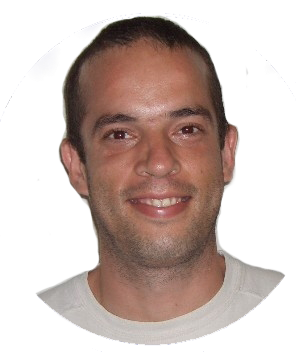
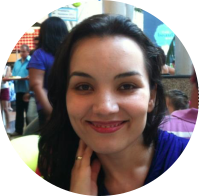
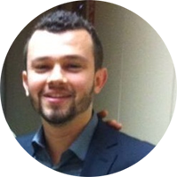
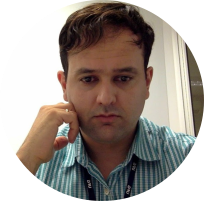
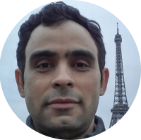

Especialização em Projetos de Sistemas e Soluções Centradas em Dados
Propiciar a formação de competências essenciais que vão da concepção e do planejamento até a melhoria e o desenvolvimento de sistemas de apoio à decisão, dotando os especialistas da capacidade de condução de projetos de viabilização e melhoria de soluções de inteligência de negócio.
Ao abordar os aspectos conceituais, procedimentais e atitudinais que envolvem a formação do especialista, busca-se a proficiência técnica e a habilitação desse profissional para atuar em projetos e processos de mudança organizacional, apropriando-os com métodos e tecnologias centradas em dados, informação e conhecimento, além de possibilitar o desenvolvimento de aptidões técnicas por meio do acesso a um conjunto de teorias, metodologias, processos, estruturas e tecnologias que transformam aglomerados de dados brutos em informação útil para tomadas de decisões estratégicas.
A concepção e implantação de sistemas de informação no âmbito organizacional exige a adoção de métodos e ferramentas adequadas, devido à complexificação dos cenários de negócio. Consequentemente, um novo repertório de competências é demandado dos profissionais e especialistas em processos, sistemas e tecnologias da informação, uma vez que as soluções que se buscam estão circunscritas em eixos temáticos complexos e multidisciplinares, resultado da confluência de várias áreas do conhecimento, envolvendo o estado da arte em ciência dos dados, computação, estatística aplicada, ciência da informação, administração e marketing.
1 - Sistemas Inteligentes de Apoio à Decisão
2 - Estatistica para a Ciência de Dados
3 - Método de Desenvolvimento de Arquitetura
4 - Métodos de Análise Exploratória de Dados
5 - Práticas e Processos de Mineração de Dados
6 - Modelagem e Arquitetura de Data Warehouse
7 - Redes Neurais e Machine Learning
8 - Processamento de Linguagem Natural
9 - Arquitetura e Soluções de Cloud Computing
10 - Gestão da Informação e do Conhecimento
11 - Projetos de Business Intelligence
12 - Design Thinking: Métodos de Estruturação de Problemas
13 - Arquiteturas de Big Data e Big Analytics
14 - Engenharia e Ciência Centrada em Dados
- Promover estudos e práticas com base em tecnologias de gestão inteligente de dados. Tornar propícia a realização de análises prospectivas sobre grandes aglomerados de dados.
- Proporcionar métodos de estruturação de problemas para ampliar os horizontes de avaliação dos agentes de decisão.
- Propiciar a adoção de tecnologias computacionais para o acesso, o processamento, o armazenamento e a visualização de dados.
- Possibilitar a adoção de técnicas de análise e modelagem estatística descritiva e inferencial.
- Tornar propícia a resolução de problemas de extração automática de assuntos (tópicos) a partir de textos, baseada em técnicas de aprendizagem por máquinas (Machine Learning), utilizando-se de modelagem probabilística de tópicos.
- Descobrir tópicos e a anotação de grandes coleções de documentos por classificação temática.
- Fornecer orientação metodológica para a implementação de soluções de inteligência de negócio.
- Fornecer visões de arquitetura de negócio, de sistemas de informação, social e comportamental.
- Habilitar os especialistas quanto à condução de projetos e processos de inovação centrados em evidências e constatações de dados.
- Coordenar, projetar, analisar, apoiar e facilitar o empreendimento de estruturas de conhecimento e objetos de aprendizagem que atendam às necessidades de negócio, a partir de modelos de análises sofisticadas de dados.
- Subsidiar o aprimoramento na gestão estratégica de negócios e na solução de problema
Coordenador: Prof. Me. Edison Andrade Martins Morais Contato do Coordenador: edison@inf.ufg.br Secretária: Ketlyn Alves Gonçalves Contato da Secretária: ketlyn@inf.ufg.br / (62) 3521-1505




